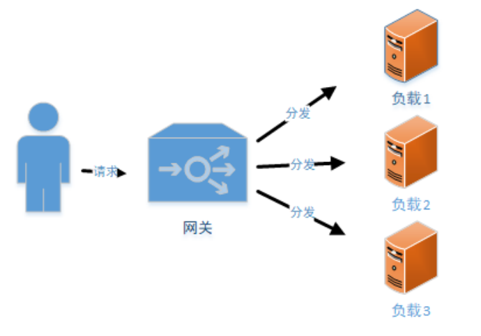
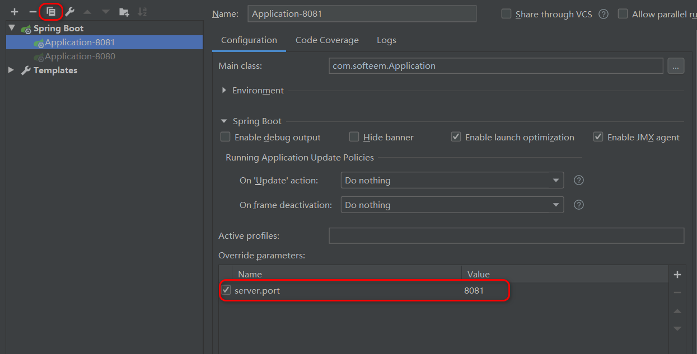
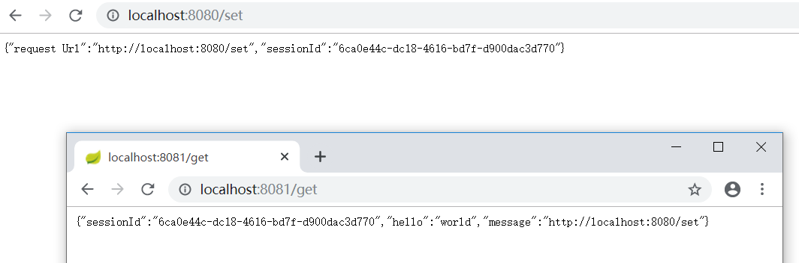
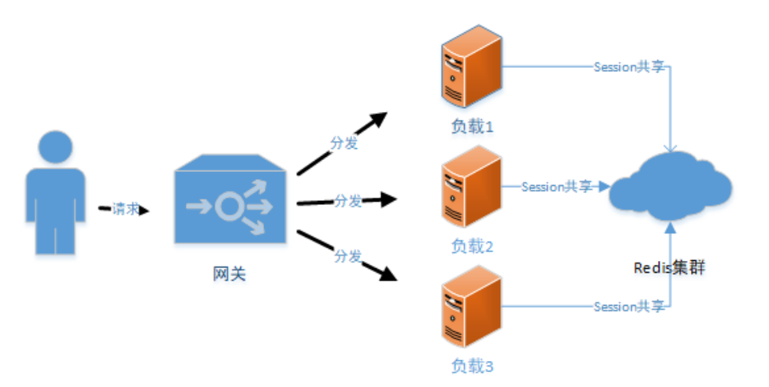

Spring Session 实现 Session 共享
1. Session 共享问题
在微服务架构中，往往由多个微服务共同支撑前端请求，如果涉及到用户状态就需要考虑分布式 Session 管理问题。
比如用户登录请求分发在 服务器A ，用户购买请求分发到了服务器B ， 那么 服务器B 就必须可以获取到用户的登录信息，否则就会影响正常交易。

因此，在分布式架构或微服务架构下，必须保证一个应用服务器上保存 Session 后，其他应用服务器可以同步或共享这个 Session 。
目前主流的分布式 Session 管理有两种方案：
Session 复制功能
部分 Web 服务器（例如，Tomcat）能够支持 Session 复制功能。用户可以通过修改 Web 服务器的配置文件，让 Web 服务器进行 Session 复制，保持每一个服务器节点的 Session 数据都能达到一致。
这种方案的局限性在于：
依赖于 Web 服务器。不是所有的 Web 服务器都提供这种功能。
每个 Web 服务器节点都会保存所有的 Session 对象，从而导致内存资源的浪费。
Session 集中存储
在单独的服务器（或服务器集群）上使用缓存技术集中管理所有的 Session 对象。所有的 Web 服务器都从这个存储介质中存取对应的 Session，实现 Session 共享。
2. Spring Session
Spring Session 提供了一套创建和管理 Servlet HttpSession 的方案。它默认采用外置的 Redis 来存储 Session 数据，以此来解决 Session 共享的问题。
Spring 为 Spring Session 和 Redis 的集成提供了组件：spring-session-data-redis 。
2.1. 快速集成
2.1.1. pom.xml
<dependency><!-- 依赖于 Redis -->
<groupId>org.springframework.boot</groupId>
<artifactId>spring-boot-starter-data-redis</artifactId>
</dependency>
<dependency><!-- 不要忘记加这个包!!! -->
<groupId>org.apache.commons</groupId>
<artifactId>commons-pool2</artifactId>
</dependency>
<dependency>
<groupId>org.springframework.session</groupId>
<artifactId>spring-session-data-redis</artifactId>
</dependency>
注意：这个 spring-session-... 并不是 spring-session-core，虽然它引用到了 spring-session-core 。引入这个包的时候请注意一下。
2.1.2. 配置文件
# Redis 配置
# Redis 数据库索引（默认为0）
spring.redis.database=0
# Redis 服务器地址
spring.redis.host=localhost
# Redis 服务器连接端口
spring.redis.port=6379
# Redis 服务器连接密码（默认为空）
spring.redis.password=
# 以下配置非本功能必须
# 连接池最大连接数（使用负值表示没有限制）
spring.redis.lettuce.pool.max-active=8
spring.redis.lettuce.pool.max-wait=-1
spring.redis.lettuce.shutdown-timeout=100
spring.redis.lettuce.pool.max-idle=8
spring.redis.lettuce.pool.min-idle=0
2.1.3. 配置类
@Configuration
@EnableRedisHttpSession(maxInactiveIntervalInSeconds = 86400*30)
public class SessionConfig {
}
maxInactiveIntervalInSeconds：设置 Session 失效时间，使用 Redis Session 之后，原 Spring Boot 中
的 server.session.timeout 属性不再生效。
至此，spring boot 的 session 共享功能配置结束。
2.2. 验证
在 Web 层写两个方法进行验证。当然，偷懒一点，你可以将这里测试用的 @RestController 连通上面的 @Configuration 一起写在 spring boot 的启动类中。类似如下：
@RestController
@EnableRedisHttpSession(maxInactiveIntervalInSeconds = 86400 * 30)
@SpringBootApplication
public class Application {
public static void main(String[] args) {
SpringApplication.run(Application.class, args);
}
@RequestMapping(value = "/set")
public Map<String, Object> setSession(HttpServletRequest request) {
Map<String, Object> map = new HashMap<>();
request.getSession().setAttribute("message", request.getRequestURL());
request.getSession().setAttribute("hello", "world");
map.put("sessionId", request.getSession().getId());
map.put("request Url", request.getRequestURL());
return map;
}
@RequestMapping(value = "/get")
public Object getSession(HttpServletRequest request) {
Map<String, Object> map = new HashMap<>();
map.put("sessionId", request.getSession().getId());
map.put("message", request.getSession().getAttribute("message"));
map.put("hello", request.getSession().getAttribute("hello"));
return map;
}
}
复制一份本项目（或在 Idea 中启动两次，注意端口冲突问题），分别从两个 URL 中访问/触发 Session 的存取功能。


